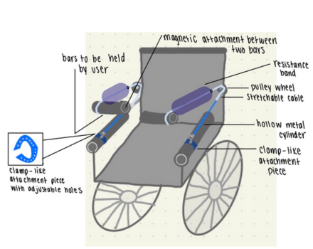

Exercise Equipment Prototyping
Company - Individual Projects
Duration - Fall 2022
Role - Team Member
Skills - Engineering Design, Design Prototyping
Today, there are lack of exercise alternatives for paraplegic patients. The lack of exercise can lead to health-related issues such as heart disease. In this project, I worked with my engineering design team to create an exercise equipment that offers a healthy amount of aerobic exercise to paraplegic patients.
About The Project
Currently, there are limited exercise options for paraplegic patients. However, the available options are often expensive and hard to gain access to. The main focus of this project is to create an alternative exercise option that offers the appropriate amount of aerobic exercise and can be accessible to most patients. The final product will be cost-efficient and focus on strengthening the mobility of the upper body.
About My Role
Throughout this project I was mainly focused on:
User Research
First, my team and I collected data through stakeholder interviews to understand the restraints they have when exercising. In the end, my team narrowed the movement to aerobic and upper-body exercises. More specifically, the exercise will be focused on arm movements.
Design Testing
For design testing, volunteers were gathered from the Biomedical Engineering Program. The volunteers were asked to fill out a short survey after testing the product. After gathering the feedback my team was more aware of the possible improvement for the product. Some volunteers reflected on the flaw of the handling flexibility. From the feedback, my team added the adjustable handle feature to our final product. The adjustable handle allows the product to be better suited for more users.
Final Prototyping
For the final prototyping, I started with a sketch of our product along with additional features generated from user feedback. Then, my team and I started gathering material that we could use for the prototype. We narrowed down what material can substitute different features of the product. 
Final Design Summary
For the final product, my team created a push bar that allows five movements with adjustable handles. Furthermore, the product does not require significant resource contribution, maintaining its affordability.

My Experience
I had a lot of fun during this project since it was the first time I fully prototyped a product. I also really enjoyed the process of solution designing and user testing. During solution design, I was able to apply my previous knowledge of engineering design and developing requirements and constraints. Conducting user surveys and reviewing stakeholder interviews also allowed me to notice the possible improvements for this project. I particularly like the process of improving the solution to get closer and closer to the final goal. I really appreciate this experience and the opportunity to enhance my engineering design skills.